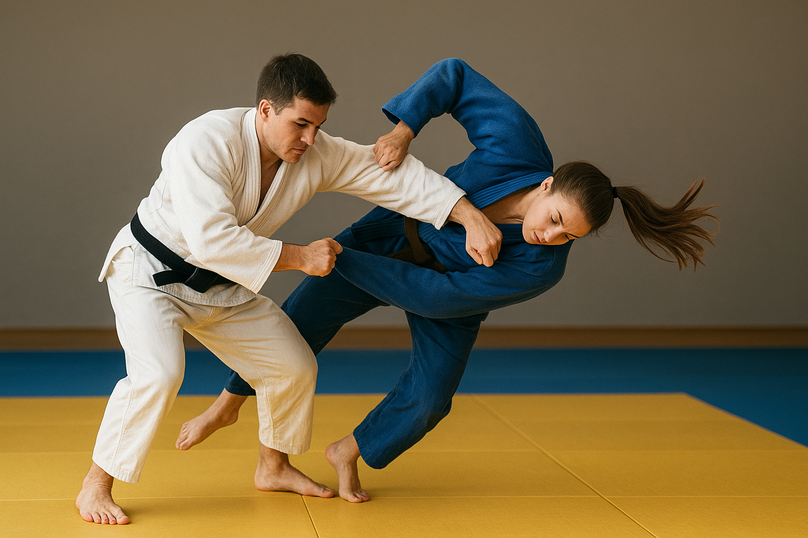
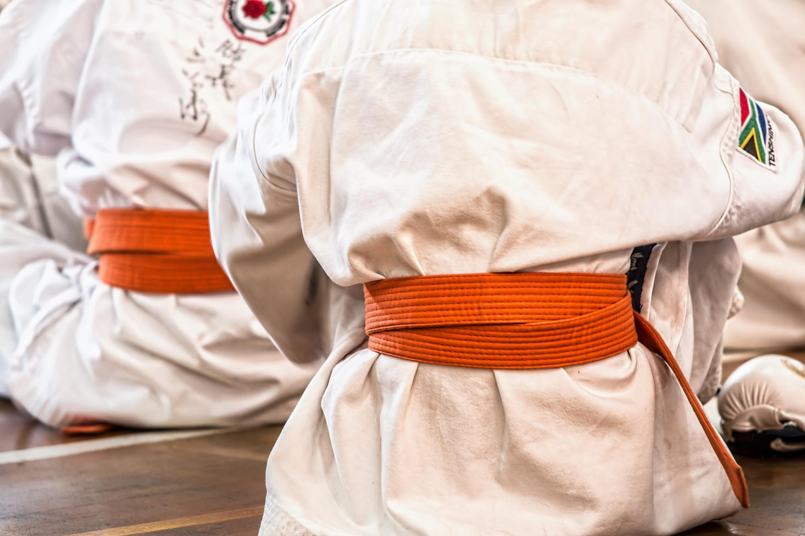

Im Judo spielen Gürtel und Regeln eine große Rolle. Sie helfen dabei, den Fortschritt der Judoka sichtbar zu machen und für ein faires Training zu sorgen.
Die Gürtel zeigen, auf welchem Niveau ein Judoka ist. Anfänger beginnen mit einem weißen Gürtel. Mit jedem neuen Können oder jeder bestandenen Prüfung steigt man im Gürtel-System auf. Die Farben variieren zwar leicht von Land zu Land, aber in vielen Vereinen gilt diese Reihenfolge:


Der schwarze Gürtel ist ein Zeichen von Können und Erfahrung. Judoka, die ihn erreichen, haben viele Jahre trainiert und zeigen nicht nur technische Fähigkeiten, sondern auch Disziplin, Ausdauer und Respekt. Neben den Farben gibt es auch sogenannte Dan-Grade, die weitere Fortschritte innerhalb des schwarzen Gürtels zeigen.
Die Gürtel haben also nicht nur praktische Bedeutung, sondern auch eine motivierende Funktion. Sie zeigen, dass Training und Übung belohnt werden. Für viele Judoka ist es ein großer Moment, wenn sie nach einem Test den nächsten Gürtel erhalten.
Damit das Training sicher und fair abläuft, gibt es Regeln, die von allen beachtet werden müssen. Die wichtigsten Regeln lassen sich in zwei Bereiche unterteilen: allgemeine Verhaltensregeln und Wettkampfrechte.
Die Regeln sorgen dafür, dass alle sicher trainieren können und dass das Wettkampfergebnis fair ist. Sie helfen auch, die Werte des Judos zu vermitteln: Respekt, Kontrolle, Geduld und Fairness.
Gürtel und Regeln sind nicht nur Vorschriften – sie sind ein Teil der Judo-Kultur. Sie zeigen, dass Judo mehr ist als körperliches Training. Wer Judotechniken lernt, lernt gleichzeitig Selbstdisziplin, Verantwortung und Respekt. Gürtel motivieren, besser zu werden, und Regeln sorgen dafür, dass alle sicher und fair üben können.
Wer Judo ernsthaft trainiert, merkt schnell: Das System aus Gürteln und Regeln macht den Sport übersichtlich, spannend und lehrreich. Man kann Fortschritte sehen, neue Ziele setzen und immer weiter lernen.